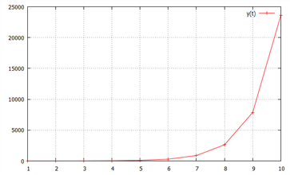
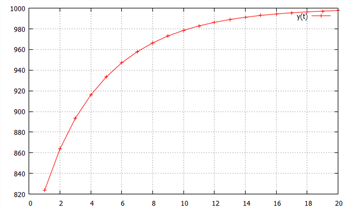
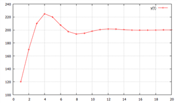

lag 연산자를 이용하면 차분방정식을 쉽게 풀 수 있다.
L은 다음과 같이 정의된다.
\(Ly_{t} \,=\,y_{t-1}\)
따라서
\(L^{0} y_{t} \,=\,y_{t}\)
\(Ly_{t} \,=\,y_{t-1}\)
\(L^{2} y_{t} \,=LLy_{t} \,=\,L\,y_{t-1} \,=\,y_{t-2}\)
\(\vdots\)
\(L^{n} y_{t} \,=\,y_{t-n}\)
또한 \(Ly_{t} \,=\,y_{t-1}\) 에서
\(y_{t} \,= \frac{1}{L} \,y_{t-1}\)
따라서
\(L^{-1} y_{t} \,=\,y_{t+1}\).............[10]
\(L^{-2} y_{t} \,=\,y_{t+2}\)
\(\vdots\)
\(L^{-n} y_{t} \,=\,y_{t+n}\)
\(Lc\,=\,c\), c는 상수
\(z_{t} \,=\,cy_{t}\)라 할 때 \(Lz_{t} \,=\,L(cy_{t} )\,=\,cLy_{t} \,=\,cy_{t-1}\)
\(L(x_{t} \,+\,y_{t} )\,=\,Lx_{t} \,+\,Ly_{t} \,=\,x_{t-1} \,+\,y_{t-1}\)
\((1-L)(1-L)\,y_{t} \,=\,(1-2L+L^{2} )y_{t} \,=\,y_{t} \,-2\,y_{t-1} \,+y_{t-2}\)
\(\sum\limits_{i=0}^{t-1} ( \phi L) ^{i} \,=\,1\,+\, \phi L\,+\,( \phi L) ^{2} \,+\, \cdots \,+\,( \phi L) ^{t-1} \,=\, \frac{1-( \phi L) ^{t}}{1- \phi L}\)
\(\sum\limits_{i=0}^{\infty } ( \phi L) ^{i} \,=\, \frac{1}{1- \phi L}\)
\(\sum\limits_{i=0}^{\infty } ( \phi L) ^{-i} \,=\, \frac{1}{1-( \phi L) ^{-1}}\)
다음의 일차 비동차 차분방정식을 고려하자
\(y_{t} \,=\, \phi y_{t-1} +a+bx_{t}\)
이는 lag 연산자를 이용하여 다음과 같이 쓸 수 있다.
\(y_{t} \,=\, \phi Ly_{t} +a+bx_{t}\)
⇒ \((1- \phi L)y_{t} \,=\,a+bx_{t}\) .................①
한편 등비급수의 합의 공식에 따라 N기의 합은
\(\sum\limits_{i=0}^{N-1} ( \phi L) ^{i} \,=\, \frac{1-( \phi L) ^{N}}{1- \phi L}\)
⇒ \(1- \phi L\,=\, \frac{1\,-\,( \phi L) ^{N} \,}{\sum\limits_{i=0}^{N-1} ( \phi L) ^{i}}\) ...........②
②를 ①에 대입하면
\(\left( \frac{1\,-\,( \phi L) ^{N} \,}{\sum\limits_{i=0}^{N-1} ( \phi L) ^{i}} \right) y_{t} \,=\,a+bx_{t}\)
⇒ \(\left( 1\,-\,( \phi L) ^{N} \, \right) y_{t} \,=\,a \sum\limits_{i=0}^{N-1} ( \phi L) ^{i} +bx_{t} \sum\limits_{i=0}^{N-1} ( \phi L) ^{i}\)...........③
③의 좌변은
\(\left( 1\,-\,( \phi L) ^{N} \, \right) y_{t} \,=\,y_{t} \,-\, \phi^{N} L^{N} y_{t} \,=\,y_{t} \,-\, \phi^{N} y_{\scriptscriptstyle {t-N}}\) ..........⑥
③의 우변 첫째항은
\(b \sum\limits_{i=0}^{N-1} ( \phi L) ^{i} \,x_{t} =\,b \sum\limits_{i=0}^{N-1} \phi^{i} x_{t-i}\)
③의 우변 둘째항은
\(a \sum\limits_{i=0}^{N-1} ( \phi L) ^{i} \,=\,\)\(\,a \left( \frac{1- \phi^{N}}{1- \phi } \right) \,\)
따라서 ③은
\(\,y_{t} \,-\, \phi^{N} y_{\scriptscriptstyle {t-N}} \,=\,a \left( \frac{1- \phi^{N}}{1- \phi } \right) \,+\,b \sum\limits_{i=0}^{N-1} \, \phi^{i} x_{t-i}\)
⇒ \(\,y_{t} \,=\, \phi^{N} y_{\scriptscriptstyle {t-N}} \,+\,a \left( \frac{1- \phi^{N}}{1- \phi } \right) \,+\,b \sum\limits_{i=0}^{N-1} \, \phi^{i} x_{t-i}\)
초기가 0기부터 시작한다면 즉 t=N이라면
\(\,y_{t} \,=\, \phi^{t} y_{0} \,+\,a \left( \frac{1- \phi^{t}}{1- \phi } \right) \,+\,b \sum\limits_{i=0}^{t-1} \, \phi^{i} x_{t-i}\)
a=0 이라면 앞의 비동차 차분방정식의 해와 같은 결과이다.
초기조건이 없다면, 즉 과거로 무한대로 계속된다면
\(\,y_{t} \,=\, \lim\limits_{\scriptscriptstyle {N \to \infty}} {[} \phi^{N} y_{\scriptscriptstyle {t-N}} \,+\,a \left( \frac{1- \phi^{N}}{1- \phi } \right) \,+\,b \sum\limits_{i=0}^{N-1} \, \phi^{i} x_{t-i} ]\)
\(\,=\, \lim\limits_{\scriptscriptstyle {N \to \infty}} \phi^{N} y_{\scriptscriptstyle {t-N}} \,+\,a \left( \frac{1}{1- \phi } \right) \,+\,b \sum\limits_{i=0}^{\infty } \, \phi^{i} x_{t-i}\)
(정리) \(\left\{y_{t} \right\}\)가 유계수열이고 \(| \phi |\,<\,1\) 이면 \(\; \lim\limits_{\scriptscriptstyle {N \to \infty}} \phi^{N} y_{\scriptscriptstyle {t-N}} \,=\,0\) |
(증명)
\(\left\{y_{t} \right\}\)가 유계수열이면
\(m\,< y_{t} \,<\,M\), where m은 하한, M은 상한[11]
i) \(1\,>\,\phi \,>\,0\) 이면
\(\phi^{N} m\,< \phi^{N} y_{t} \,<\, \phi^{N} M\)
극한의 정리에 따라[12]
\(\lim\limits_{\scriptscriptstyle {N \to \infty}} \phi^{N} m\,< \lim\limits_{\scriptscriptstyle {N \to \infty}} \phi^{N} y_{t} \,<\, \lim\limits_{\scriptscriptstyle {N \to \infty}} \phi^{N} M\)
⇒ \(0\,< \lim\limits_{\scriptscriptstyle {N \to \infty}} \phi^{N} y_{t} \,<\,0\)
극한의 스퀴즈 정리에 따라[13]
∴ \(\lim\limits_{\scriptscriptstyle {N \to \infty}} \phi^{N} y_{t} \,=\,0\)
ii) \(-1\,<\, \phi \,<\,0\) 이면
N에 따라
\(\phi^{N} m\,> \phi^{N} y_{t} \,>\, \phi^{N} M\), 또는 \(\phi^{N} m\,< \phi^{N} y_{t} \,<\, \phi^{N} M\)
어느 경우든 위와 같은 방법으로 \(\lim\limits_{\scriptscriptstyle {N \to \infty}} \phi^{N} y_{t} \,=\,0\)
Q.E.D.
이를 transversality 조건, 또는 no bubble조건이라 한다.
∴ \(\,y_{t} \,=\,a \left( \frac{1}{1- \phi } \right) \,+\,b \sum\limits_{i=0}^{\infty } \, \phi^{i} x_{t-i}\)
(정리) \(\left\{ x_{t} \right\}\)가 단조증가 또는 단조감소 유계수열이고, \(| \phi |\,<\,1\) 이면 \(\, \sum\limits_{i=0}^{\infty } \, \phi^{i} x_{t-i}\)는 수렴한다. |
(증명)
\(\left\{ x_{t} \right\}\)가 유계수열이면
\(m\,<x_{t} \,<\,M\), where m은 하한, M은 상한
i) \(1\,>\,\phi \,>\,0\) 이면
\(\phi^{N} m\,< \phi^{N} x_{t} \,<\, \phi^{N} M\)
⇒ \(\sum\limits_{i=0}^{N-1} \phi^{N} m\,< \sum\limits_{i=0}^{N-1} \phi^{N} x_{t} \,<\, \sum\limits_{i=0}^{N-1} \phi^{N} M\)
⇒ \(\sum\limits_{i=0}^{\infty } \phi^{N} m\,< \sum\limits_{i=0}^{\infty } \phi^{N} x_{t} \,<\, \sum\limits_{i=0}^{\infty } \phi^{N} M\)
⇒ \(\frac{m}{1- \phi } \,< \sum\limits_{i=0}^{\infty } \phi^{N} x_{t} \,<\, \frac{M}{1- \phi }\)
따라서 \(\sum\limits_{i=0}^{\infty } \phi^{N} x_{t} \,\)는 유계수열이고 단조증가 또는 단조감소수열.
단조유계수열의 정리에 따라 \(\sum\limits_{i=0}^{\infty } \phi^{N} x_{t} \,\)는 수렴[14]
i) \(-1\,<\, \phi \,<\,0\) 인 경우도 비슷한 방법으로 증명
Q.E.D.
\(y_{t}\)가 유계수열이라는 조건을 완화하면(즉 transversality 조건을 완화하면) 사실상 이 차분방정식의 해는 무한히 많다.
\(\,y_{t}^{p} \,=\,a \left( \frac{1}{1- \phi } \right) \,+\,b \sum\limits_{i=0}^{\infty } \, \phi^{i} x_{t-i} \,\) 라 하면
\(y_{t} \,=\,y_{t}^{p} \,+\,c \phi^{t}\)도 해가 된다. c는 임의상수
\(y_{t} \,=\, \phi y_{t-1} +a+bx_{t}\)
⇒ \(\,y_{t}^{p} \,+\,c \phi^{t} \,=\, \phi (\,y_{t-1}^{p} \,+\,c \phi^{t-1} )\,+\,a\,+\,bx_{t}\)
\(\,=\, \phi \,y_{t-1}^{p} \,+\,c \phi^{t} \,+\,a\,+\,bx_{t}\)
\(\,=\,y_{t}^{p} \,+\,c \phi^{t} \,\), (∵ \(\,y_{t}^{p} =\, \phi \,y_{t-1}^{p} \,+\,a\,+\,bx_{t}\))
따라서 \(y_{t} \,=\,y_{t}^{p} \,+\,c \phi^{t}\)도 해이다. c는 경계조건에서 구해진다.
사실상 \(c \phi^{t}\)는 차분방정식의 동차부분의 해이므로 여함수이고, \(\,a \left( \frac{1}{1- \phi } \right) \,+\,b \sum\limits_{i=0}^{\infty } \, \phi^{i} x_{t-i} \,\)는 차분방정식의 특수해이다. 즉 중첩의 원리를 적용해서 일반해는 여함수와 특수해로 구성되는 것이다.
이 해는 경제학적으로 다음의 의미를 갖고 있다. 해에서 \(\,a \left( \frac{1}{1- \phi } \right) \,+\,b \sum\limits_{i=0}^{\infty } \, \phi^{i} x_{t-i} \,\)는 모형의 고유의 특성과 관련해서 발생하기 때문에 펀더멘탈(fundamental)이라 하고, \(c \phi^{t}\)는 모형의 고유의 특성과 관련이 없기 때문에 거품(bubble)이라 한다.[15]
지금까지 차분방정식은 후방대입법으로 해를 구해왔다. 시스템의 현재의 상태가 과거의 상태에 의존하는 대부분의 공학적 예나 경제학의 문제에서 이렇게 푸는 것이 적절하다. 그러나 현재의 상태가 그 상태의 미래의 예측치에 의존한다면 전방대입법으로 해를 푸는 것이 바람직할 경우도 있다.[16]
\(| \phi |\,>\,1\) 인 경우 위와 같은 후방대입법으로 풀면 \(y_{t}\)는 무한 발산하므로 안정해를 구할 수 없다. 이 경우 전방대입법으로 풀면 안정해를 구할 수 있다.
다음의 일차 비동차 차분방정식을 고려하자
\(y_{t} \,=\, \phi y_{t-1} +a+bx_{t-1}\)
⇒ \(y_{t} \,=\, \frac{1}{\phi } y_{t+1} - \frac{a}{\phi } \,-\, \frac{b}{\phi } x_{t}\)
⇒ \(y_{t} \,=\,( \phi L) ^{-1} y_{t} - \frac{a}{\phi } - \frac{b}{\phi } x_{t}\)
⇒ \((1-( \phi L) ^{-1} )y_{t} \,=\,- \frac{a}{\phi } - \frac{b}{\phi } x_{t}\)
\(\sum\limits_{i=0}^{N-1} [( \phi L) ^{-1} ] ^{i} \,=\, \frac{1-( \phi L) ^{-N}}{1-( \phi L) ^{-1}}\) 이므로
\([1-( \phi L) ^{-N} ]y_{t} \,=\,- \frac{a}{\phi } \sum\limits_{i=0}^{N-1} ( \phi L) ^{-i} - \frac{b}{\phi } \sum\limits_{i=0}^{N-1} ( \phi L) ^{-i} x_{t}\)
⇒ \(y_{t} \,=\, \phi^{-N} y_{\scriptscriptstyle {t+N}} \,- \frac{a}{\phi } \left( \frac{1- \phi^{-N}}{1- \phi^{-1}} \right) \,-\, \frac{b}{\phi } \sum\limits_{i=0}^{N-1} \phi^{-i} x_{t+i} \,\)
\(N\, \to \, \infty\) 이면 \(| \phi |\,>\,1\) 이므로
\(y_{t} \,=\, \lim\limits_{\scriptscriptstyle {N \to \infty}} \phi^{-N} y_{\scriptscriptstyle {t+N}} \,+ \frac{a}{1- \phi } \,-\, \frac{b}{\phi } \sum\limits_{i=0}^{\infty } \phi^{-i} x_{t+i} \,\)
따라서 transversality 조건을 가정하면 \(\, \lim\limits_{\scriptscriptstyle {N \to \infty}} \phi^{-N} y_{\scriptscriptstyle {t+N}} \,=\,0\), 따라서 해는
\(y_{t} \,=\, \frac{a}{1- \phi } \;-b \sum\limits_{i=1}^{\infty } \left( \frac{1}{\phi } \right) ^{i} x_{t+i} \,\)
\(y_{t}\)는 후방대입법과 달리 t기 이후 미래 \(x_{t+i}\)의 합으로 표현된다.
transversality 조건을 완화하면 해는 거품항(\(\,c \phi^{t}\))을 포함한다.[17]
\(y_{t} \,=\, \frac{a}{1- \phi } \;-b \sum\limits_{i=1}^{\infty } \left( \frac{1}{\phi } \right) ^{i} x_{t+i} \,+\,c \phi^{t}\), c는 임의의 상수
\(\left | \frac{1}{\phi } \right | \,<\,1\) 이지만 거품항의 존재 때문에 \(y_{t}\)는 발산한다.
이 해가 수렴할 가능성은 c = 0일 때 뿐이다. 즉 초기조건에 따라 c = 0로 될 때뿐이다.
c = 0 일 때, \(x_{t}\)가 유계수열이면 \(y_{t} \,=\, \frac{a}{1- \phi } \;-b \sum\limits_{i=1}^{\infty } \left( \frac{1}{\phi } \right) ^{i} x_{t+i} \,\) 가 유일한 안정해가 된다.
\(\left\{ x_{t\,} \right\} \,=\,k\), (k는 상수) 라면
\(y_{t} \,=\, \frac{a}{1- \phi } \,-b \left( \frac{1}{\phi } \right) \sum\limits_{i=0}^{\infty } \left( \frac{1}{\phi } \right) x_{t+1+i}\)
⇒ \(y_{t} \,=\, \frac{a}{1- \phi } \,-b \left( \frac{1}{\phi } \right) \frac{k}{1- \frac{1}{\phi }}\)
⇒ \(y_{t} \,=\, \frac{a}{1- \phi } \,+ \frac{bk}{1\,-\,\phi }\)
이는 \(y_{t}\)가 안정상태일 때의 균형점이다. 따라서 후방대입법을 적용했을 때 c = 0 일 때 유일한 안정해를 갖는다. 다른 경우는 모두 발산한다.
2차 선형 차분방정식(second-order linear difference equation)
2차 선형차분방정식은 다음과 같이 2기의 시차를 갖는다.
\(y_{t} = \alpha + \phi_{1} y_{t-1} + \phi_{2} y_{t-2}\) , 초기값 \(y_{0} ,\;y_{1}\)
1차의 경우와 같이 중첩의 원리를 이용해서 여함수와 특수해를 구한다.
비동차항이 상수이므로 여함수 \(y_{c} \,=\,k\) 라 하면
\(k\,=\, \alpha + \phi_{1} k\,+\, \phi_{2} k\)
i) \(\phi_{1} +\, \phi_{2} \, != \,1\) 이라면
\(k= \frac{\alpha }{1- \phi_{1} - \phi_{2}}\)
∴ \(y_{c} = \frac{\alpha }{1- \phi_{1} - \phi_{2}}\)
ii) \(\phi_{1} +\, \phi_{2} \,=\,1\) 이라면
여함수를 \(y_{c} \,=\,kt\) 라 하면
\(kt= \alpha + \phi_{1} k(t-1)+ \phi_{2} k(t-2)\)
⇒ \(k[t\,-\, \phi_{1} (t-1)\,-\, \phi_{2} (t-2)]\,= \alpha\)
⇒ \(k\,= \frac{\alpha }{t\,-\, \phi_{1} (t-1)\,-\, \phi_{2} (t-2)}\)
⇒ \(k\,= \frac{\alpha }{2\,-\, \phi_{1}}\), (∵ \(\phi_{1} +\, \phi_{2} \,=\,1\))
∴ \(y_{c} \,= \frac{\alpha }{2\,-\, \phi_{1}}\)
특성해는 동차함수만을 고려하므로
\(y_{t} = \phi_{1} y_{t-1} + \phi_{2} y_{t-2}\)
이 차분방정식의 한 해는 \(y_{t} =\mathbf{A}x^{t}\)의 형태를 갖는 것이 알려져 있다. 이를 대입하면
\(\mathbf{A}x^{t} = \phi_{1} \mathbf{A}x^{t-1} + \phi_{2} \mathbf{A}x^{t-2}\)
위 식을 정리하면
\(x^{2} - \phi_{1} x- \phi_{2} =0\)
이를 특성다항식(characteristic polynomial)라 한다.[18]
특성다항식의 두 근(고유치)을 \(r_{1} ,\,r_{2}\)라 하면, 근의 공식에 의해
\(r_{1} ,\,r_{2} = \frac{\phi_{1} \pm \sqrt {\phi_{1}^{2} +4 \phi_{2}}}{2}\)
두 근은 실수일 수도 허수일 수도 있다.
(1) 두 근이 실수일 경우\((\phi_{1}^{2} +4 \phi_{2} \geq 0)\)
\(y_{p} =A_{1} r^{t} +A_{2} r^{t}\)
일반해는 \(y_{t} \,=\,y_{c} +A_{1} r_{1}^{t} +A_{2} r_{2}^{t}\)
초기값 \(y_{0} ,\,y_{1}\) 이 주어지면 \(A_{1} ,\,A_{2}\) 를 구할 수 있다.
\(y_{0} =y_{c} +A_{1} +A_{2}\)
\(y_{1} =y_{c} +A_{1} r_{1} +A_{2} r_{2}\)
행렬로 표현하면
\({\begin{pmatrix}1 & 1 \\ r_{1} & r_{2}\end{pmatrix}} = {\begin{pmatrix}A_{1} \\ A_{2}\end{pmatrix}} {\begin{pmatrix}y_{0} -y_{c} \\ y_{1} -y_{c}\end{pmatrix}}\)
⇒ \({\begin{pmatrix}A_{1} \\ A_{2}\end{pmatrix}} \,=\, {\begin{pmatrix}1 & 1 \\ r_{1} & r_{2}\end{pmatrix}}^{-1} {\begin{pmatrix}y_{0} -y_{c} \\ y_{1} -y_{c}\end{pmatrix}}\)
\(= \frac{1}{r_{2} -r_{1}} {\begin{pmatrix}\;r_{2} & \;-1 \\ -r_{1} & \;1\end{pmatrix}} {\begin{pmatrix}y_{0} -y_{c} \\ y_{1} -y_{c}\end{pmatrix}}\)
따라서 일반해는
\(y_{t} \,=\,\frac{\alpha }{1- \phi_{1} - \phi_{2}}+A_{1} r_{1}^{t} +A_{2} r_{2}^{t}\), where \({\begin{pmatrix}A_{1} \\ A_{2}\end{pmatrix}} \,= \frac{1}{r_{2} -r_{1}} {\begin{pmatrix}\;r_{2} & \;-1 \\ -r_{1} & \;1\end{pmatrix}} {\begin{pmatrix}y_{0} -y_{c} \\ y_{1} -y_{c}\end{pmatrix}}\)
모든 \(|r_{i} |<1\,\) 이면 \(t \to \infty\)에 따라 \(y_{t} \,=\, \frac{\alpha }{1- \phi_{1} - \phi_{2}}\), 이를 안정해라고 한다.
모든 \(|r_{i} |>1\,\), 또는 일부 \(|r_{i} |>1\,\) 이면 해는 발산한다.
예) \(y_{t} = \frac{7}{2} y_{t-1} - \frac{3}{2} y_{t-2}\), \(y_{0} =1,\;y_{1} = \frac{3}{2}\)
(풀이)
\(x^{2} - \frac{7}{2} x+ \frac{3}{2} =0\) 에서
\(r_{1} =3,\;r_{2} = \frac{1}{2}\)
∴ 일반해는 \(y_{t} =A_{1} 3^{t} +A_{2} ( \frac{1}{2} ) ^{t}\)
두 근 중 하나가 1보다 크므로 이 차분방정식은 발산
초기값을 이용해 특수해를 구하면
\(y_{0} =A_{1} +A_{2} =1\)
\(y_{1} =3A_{1} + \frac{1}{2} A_{2} = \frac{3}{2}\)
∴ \(A_{1} = \frac{2}{5} ,\;A_{2} = \frac{3}{5}\)
따라서
\(y_{t} = \frac{2}{5} 3^{t} + \frac{3}{5} ( \frac{1}{2} ) ^{t}\)
t→∞에 따라 \(y_{t} \to \infty\) 임을 알 수 있다.
이를 그래프로 그리면 다음과 같다.[19]

(풀이끝)
예) \(y_{t} =100+1.3y_{t-1} -0.4y_{t-2} \,\) , \(y_{0} =800,\;y_{1} =850\)
(풀이)
여함수는
\(\,k\,=100+1.3k-0.4k\,\)
\(y_{c} \,=\,k\,= \frac{100}{1-1.3+0.4} =1000\)
\(r^{2} -1.3r+0.4=0\,\) 에서
두 근은 \(r_{1} = \frac{4}{5} ,\;r_{2} = \frac{1}{2}\)
특수해는 \(y_{p} =A_{1} ( \frac{4}{5} ) ^{t} +A_{2} ( \frac{1}{2} ) ^{t} \,\)
일반해는 \(y_{t} \,=\,y_{c} \,+\,y_{p}\)
\(y_{t} =1000+A_{1} ( \frac{4}{5} ) ^{t} +A_{2} ( \frac{1}{2} ) ^{t} \,\)
두 근이 1보다 작으므로 이 차분방정식의 값은 t→∞에 따라 수렴한다.
초기값을 대입하면
\({\begin{pmatrix}A_{1} \\ A_{2}\end{pmatrix}} =\, {\begin{pmatrix}1 & 1 \\ \frac{4}{5} & \frac{1}{2}\end{pmatrix}}^{-1} {\begin{pmatrix}-200 \\ -150\end{pmatrix}} = {\begin{pmatrix}- \frac{500}{3} \\ - \frac{100}{3}\end{pmatrix}}\)
일반해는
\(y_{t} =1000- \frac{500}{3} ( \frac{4}{5} ) ^{t} - \frac{100}{3} ( \frac{1}{2} ) ^{t} \,\)
t→∞에 따라 \(y_{t} \to 1000\) 임을 알 수 있다.

(풀이끝)
(2) 두 근이 중근일 경우\(( \phi_{1}^{2} +4 \phi_{2} =0)\)
\(r_{1} \,=\,r_{2} = \frac{\phi_{1}}{2}\)
따라서 특수해는
\(y_{p} =A_{1} r^{t} +A_{2} r^{t} \,=\,(A_{1} \,+\,A_{2} )r^{t} \,=\,A_{3} r^{t}\), where \(A_{3} \,=\,A_{1} \,+\,A_{2}\)
해가 하나이므로 이와 독립인 또 다른 해를 구한다.
\(y_{t} =Atr^{t}\)는 미분방정식 \(y_{t} = \phi_{1} y_{t-1} + \phi_{2} y_{t-2}\)의 또 다른 해이다.
그 이유는
\(Atr^{t} = \phi_{1} A(t-1)r^{t-1} + \phi_{2} A(t-2)r^{t-2}\)
⇒ \(tr^{2} = \phi_{1} (t-1)r+ \phi_{2} (t-2)\)
⇒ \(tr^{2} -\, \phi_{1} tr\,-\, \phi_{2} t\,=\,- \phi_{1} r\,-2\, \phi_{2}\)
⇒ \(0\,=\,0\), (∵ \(r= \frac{\phi_{1}}{2}\), \(\phi_{1}^{2} +4 \phi_{2} =0\))
따라서 \(y_{t} =Atr^{t}\)는 해가 된다.
따라서 특수해는
\(y_{p} =A_{3} r^{t} +A_{4} tr^{t}\)..........[20]
따라서 일반해는
\(y_{t} \,=\, \frac{\alpha }{1- \phi_{1} - \phi_{2}} +A_{3} r_{}^{t} +A_{4} tr_{}^{t}\)
\(|r|<1\,\) 이면 \(t \to \infty\)에 따라 \(y_{t} \,=\, \frac{\alpha }{1- \phi_{1} - \phi_{2}}\)로 수렴한다.[21]
\(|r|>1\,\) 이면 해는 발산한다.
예) \(y_{t} =100+4y_{t-1} -4y_{t-2} \,\) , \(y_{0} =800,\;y_{1} =900\)
(풀이)
비동차항이 상수이므로 여함수 \(y_{c} \,=\,k\) 라 하면
\(k\,=\,100+4k\,-4k\)
∴ \(k=100\)
∴ \(y_{c} =100\)
\(r^{2} +4r+4=0\,\) 에서
두 근은 중근으로 \(r=\,-2\)
따라서 일반해는
\(y_{t} \,=\,100+A_{3} 2_{}^{t} +A_{4} t2_{}^{t}\)
\(y_{0} \,=\,100+A_{3} \,=\,800\) ⇒ \(A_{3} \,=\,700\)
\(y_{1} \,=\,100+700 \times 2+2A_{4} \,=\,900\) ⇒ \(A_{4} \,=\,-300\)
∴ \(y_{t} \,=\,100+700(2_{}^{t} )-300t2_{}^{t}\)
(풀이끝)
(3) 두 근이 허수일 경우\(( \phi_{1}^{2} +4 \phi_{2} <0)\)
두 근은 켤레복소수이므로 \(r_{1} =a+bi,\,r_{2} \,=a-bi\) 라 하면
\(r_{1} ,\,r_{2}\) 를 극좌표로 표현하면[22]
\(r_{1} =re^{\theta i} ,\;r_{2} =re^{-\theta i}\) , where \(\tan \theta \,=\, \frac{b}{a}\)
여기서 r은 \(| a\pm bi | = \sqrt {a^{2} +b^{2}}\).............[23]
\(r_{1} ,\,r_{2}\)가 복소수라면 \(A_{1} ,\,A_{2}\) 도 서로 켤레복소수
\(A_{1} =c+di,\;A_{2} =c-di\) 라고 하면
\(A_{1} =Ae^{\alpha i} ,\;A_{2} =Ae^{-\alpha i}\) , where \(\tan \alpha \,=\, \frac{d}{c}\)
여기서 A는 \(| c\pm di | = \sqrt {c^{2} +d^{2}}\)
\(y_{t} =y_{c} +A_{1} r_{1}^{t} +A_{2} r_{2}^{t}\)
\(=y_{c} +Ae^{\alpha i} (re^{\theta i} ) ^{t} +Ae^{- \alpha i} (re^{- \theta i} ) ^{t}\)
\(=y_{c} +Ar^{t} (e^{i( \alpha + \theta t)} +e^{-i( \alpha + \theta t)} )\)
\(=y_{c} +2Ar^{t} \cos ( \alpha + \theta t)\), (∵ 오일러정리에 의해 \(e^{\theta i} \,=\,\cos \theta \,+\,i\,\sin \theta\), \(e^{- \theta i} \,=\,\cos \theta -\,i\,\sin \theta\))
허수해를 갖는 경우 차분방정식은 코사인 형태로 표현된다. 즉 허수해를 갖는 경우는 차분방정식이 진동(oscillate)한다.
두 근의 절대값이
|r|<1 ⇒ 차분방정식은 수축되는 cosine 곡선 ⇒ 진동, 수렴형
|r|=1 ⇒ 차분방정식은 일정한 cosine 곡선 ⇒ 진동, 일정형
|r|>1 ⇒ 차분방정식은 증폭하는 cosine 곡선 ⇒ 진동, 발산형
차분방정식의 안정성 ⇔ \(| r_{1} | = | r_{2} | = | r | = \sqrt {a^{2} +b^{2}} <1\)
예) \(y_{t} =100+y_{t-1} -0.5y_{t-2} \,\) , \(y_{0} =120,\;y_{1} =100\)
(풀이)
여함수는
\(y_{c} \,=\,k= \frac{100}{1-1+0.5} \,=\,200\)
\(r^{2} -r+0.5=0\,\) 에서
두 근은 \(r_{1} =0.5+0.5i,\;r_{2} =0.5-0.5i\)
일반해는
\(y_{t} =200+A_{1} (0.5+0.5i) ^{t} +A_{2} (0.5-0.5i) ^{t} \,\)
\(\left | r_{1} \right | = \left | r_{2} \right | = \left | r \right | = \sqrt {0.5^{2} +0.5^{2}} <1\) 이므로
이 차분방정식의 값은 t→∞에 따라 진동하면서 수렴한다.
초기값을 대입하면
\({\begin{pmatrix}A_{1} \\ A_{2}\end{pmatrix}} =\, {\begin{pmatrix}1 & \;1 \\ 0.5+0.5i & \;0.5-0.5i\end{pmatrix}}^{-1} {\begin{pmatrix}-100 \\ -80\end{pmatrix}} = {\begin{pmatrix}-50+30i \\ -50-30i\end{pmatrix}}\)
∴ \(y_{t} =200+(-50+30i)(0.5+0.5i) ^{t} +(-50-30i)(0.5-0.5i) ^{t} \,\)
\(y_{t} =y*+2Ar^{t} \cos ( \alpha + \theta t)\) 를 이용하여 식을 구체적으로 표시하면
\(r= \sqrt {0.5^{2} +0.5^{2}} \,= \frac{1}{\sqrt {2}}\)
\(A\,=\, \sqrt {50^{2} +30^{2}} \,=\, \sqrt {3400}\)
\(\tan \theta \,=\, \frac{0.5}{0.5} \,=1\)
\(\theta \,=\, \frac{\pi }{4}\)
\(\tan \alpha \,=\, \frac{30}{-50} \,\)
\(\alpha \,=\,\tan^{-1} ( \frac{3}{-5} )+ \pi \,=\,2.601173\)
\(y_{t} =200+2 \sqrt {3400} ( \frac{1}{\sqrt {2}} ) ^{t} \cos (2.601173+ \frac{\pi }{4} t)\)
이를 그림으로 그려보면 아래 그림과 같다. t→∞에 따라 \(y_{t} \to 200\) 임을 알 수 있다.

\(L^{-i}\)를 lead 연산자라고도 한다.
↩‘수열의 극한’ 참조
↩‘수열의 극한’ 참조
↩‘수열의 극한’ 참조
↩‘단조유계수열의 정리’ 참조
↩Bubbles refer to asset prices that exceed an assetís fundamental value because current owners believe that they can resell the asset at an even higher price in the future. 거품의 실증적 존재에 관해서는 경제학자들간에 견해가 갈린다.
↩합리적 기대모형의 경우 미래의 예측치에 의존하므로 전방대입법을 많이 사용한다.
↩원래의 차분방정식이 동일하므로 거품항을 포함한 해도 해가 됨의 증명은 후방대입법에서 보여줬다.
↩행렬의 특성다항식 참조
↩연속함수 모양으로 표시되었지만 t가 양의 정수이므로 이는 실질적으로 계단형(step-wise)임에 주의
↩\(Ar^{t}\)와 독립인 함수의 선형결합을 구하다 보니 또 다른 해인 \(Atr^{t}\)를 사용하는 것이다.
↩\(|r|<1\,\) 이면 \(\lim\limits_{t \to \infty } tr_{}^{t} \,=\, \lim\limits_{t \to \infty } {\frac{t}{r^{-t}}} \,=\, \lim\limits_{t \to \infty } {\frac{1}{r^{-t} \ln r}} \,=0\,\),(∵ 로피탈의 정리)
↩‘복소수’ 참조
↩‘복소수’ 참조
↩← 수렴·발산과 비동차 방정식 · 절별 목차 · 끝 →